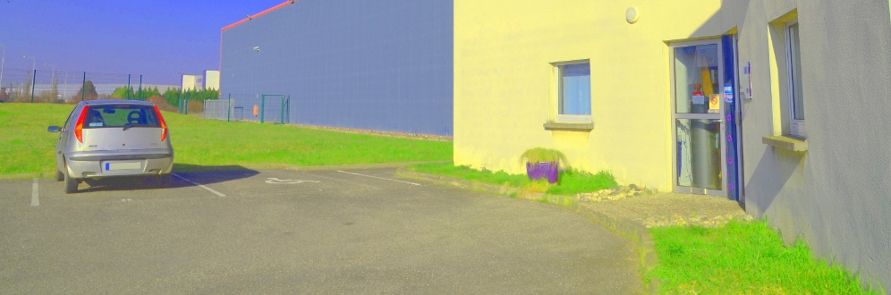
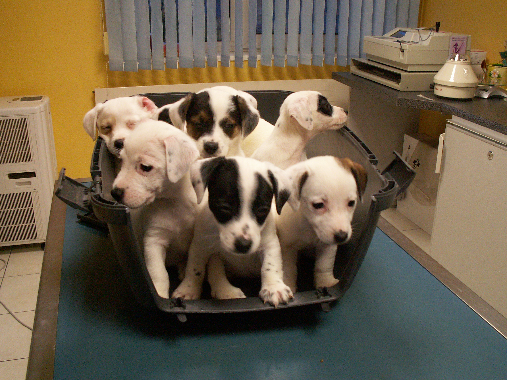

Espèces soignées
NAC : Nouveaux Animaux de Compagnie
Chien
Chat
Lapin
Cobaye
Furet
Rat
Oiseaux
Reptiles
Autres
Domaines d'activité
Médecine et chirurgie
Radiologie
Echographie
Analyses
Hospitalisation
Diététique
Comportement
Bienvenue
Le cabinet du Dr Alain Balestreri vous souhaite la bienvenue sur son site.
Celui-ci est conçu pour vous communiquez des informations utiles concernant le cabinet
et son activité.
Fermeture exceptionnelle
du 20/06/2013 au 05/07/2013 inclu
Auteur: Dr Alain Balestreri
Centre de soin pour la faune sauvage
Depuis peu, il existe un centre de soin pour la faune sauvage en région Centre Alsace.
Si vous trouvez un animal sauvage en difficulté, contactez "Sentinelle Nature Alsace" au
06 XX XX XX XX.
Sur leur site http://www.sentinelle-nature-alsace.fr/, vous trouverez des conseils pour savoir comment réagir.
Auteur: Dr Alain Balestreri
Identification des chats
Le législateur a rendu obligatoire l'identification des chats nés après le 1 janvier 2012.
Pour les chats restant sur le territoire Français, vous avez le choix entre le transpondeur ("puce") électronique ou le tatouage.
Pour les chats qui passent les frontières, la puce est obligatoire.
Auteur: Dr Alain Balestreri
Galerie
- 


- 